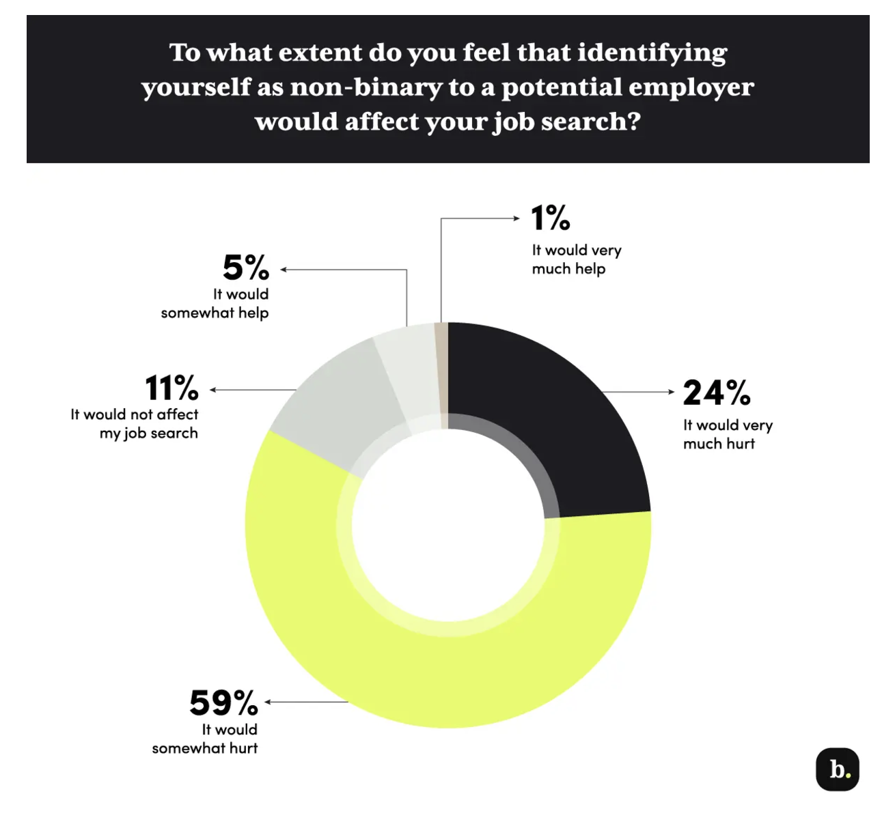
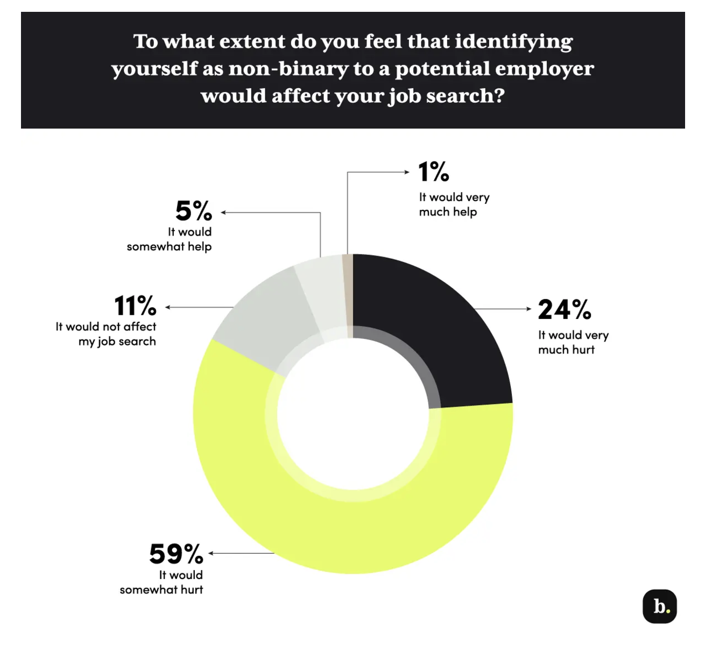

Hiring Rates
How are the hiring rates of LGBTQ+ and gender-nonconforming people in comparison to their heterosexual and cisgender peers? Using the insights that were gathered from a research conducted on a pool of non-binary people and hiring managers, here are the research questions and statistics.
To what extent do you feel that identifying yourself as non-binary to a potential
employer would affect your job search?
Most participants in the research believed identifying as non-binary could
harm their job prospects, leading many to hide their identities to maintain employment. A
34-year-old worker in Florida shared, “I am in the non-binary closet due to professional
reasons… coming out could cost me future job opportunities.” However, some saw disclosing
their non-binary identity as a way to find inclusive employers. A 20-year-old student said,
“I include my pronouns early to gauge potential employers’
reactions.”

Most participants in the research believed identifying as non-binary could harm their job prospects, leading many to hide their identities to maintain employment. A 34-year-old worker in Florida shared, “I am in the non-binary closet due to professional reasons… coming out could cost me future job opportunities.” However, some saw disclosing their non-binary identity as a way to find inclusive employers. A 20-year-old student said, “I include my pronouns early to gauge potential employers’ reactions.”
In your opinion, how has your non-binary identity affected your work experience
in general?
More than half of non-binary workers reported negative experiences in the
workplace, with those in the South feeling this more acutely due to the region’s
conservative values and anti-LGBTQ+ legislation. A 25-year-old professional shared, “In
South Carolina, I was told I had to stay closeted to succeed,” contrasting with a better
experience in New York City. Forty-one percent of non-binary workers said their identity had
a neutral effect on their
careers, likely because many conceal their gender identity to avoid bias or violence.
A young worker in Oregon explained, “I hesitate to openly identify as non-binary… it
jeopardizes my safety.” Negative experiences also varied by assigned sex and other
intersecting identities.
Non-binary workers assigned female at birth reported more challenges than those assigned
male, facing compounded discrimination, particularly among workers of color and those with
disabilities.
More than half of non-binary workers reported negative experiences in the workplace, with those in the South feeling this more acutely due to the region’s conservative values and anti-LGBTQ+ legislation. A 25-year-old professional shared, “In South Carolina, I was told I had to stay closeted to succeed,” contrasting with a better experience in New York City. Forty-one percent of non-binary workers said their identity had a neutral effect on their careers, likely because many conceal their gender identity to avoid bias or violence. A young worker in Oregon explained, “I hesitate to openly identify as non-binary… it jeopardizes my safety.” Negative experiences also varied by assigned sex and other intersecting identities. Non-binary workers assigned female at birth reported more challenges than those assigned male, facing compounded discrimination, particularly among workers of color and those with disabilities.
Study of Hiring Managers Confirms Bias Against Non-binary Job Seekers
The resume experiment showed that employers favored applicants who did not
disclose their gender identity. To explore why, the research surveyed 850 hiring managers,
showing them resumes with or without pronouns. Resumes with “they/them” pronouns received
less
favorable impressions, with 72% of managers willing to interview candidates without pronouns
compared to 69% for those with pronouns. Some hiring managers revealed blatant bias, citing
pronouns as a reason to reject resumes.
Comments included phrases like, “Take off the pronouns; I would trash the resume,” and “The
pronouns are off-putting and unnecessary.” Such bias was present across industries,
including progressive fields like education and entertainment, and in liberal regions.
Managers also spent less time reviewing resumes with pronouns, suggesting quicker decisions
against these candidates, even when overt bias wasn’t expressed.
The resume experiment showed that employers favored applicants who did not disclose their gender identity. To explore why, the research surveyed 850 hiring managers, showing them resumes with or without pronouns. Resumes with “they/them” pronouns received less favorable impressions, with 72% of managers willing to interview candidates without pronouns compared to 69% for those with pronouns. Some hiring managers revealed blatant bias, citing pronouns as a reason to reject resumes. Comments included phrases like, “Take off the pronouns; I would trash the resume,” and “The pronouns are off-putting and unnecessary.” Such bias was present across industries, including progressive fields like education and entertainment, and in liberal regions. Managers also spent less time reviewing resumes with pronouns, suggesting quicker decisions against these candidates, even when overt bias wasn’t expressed.